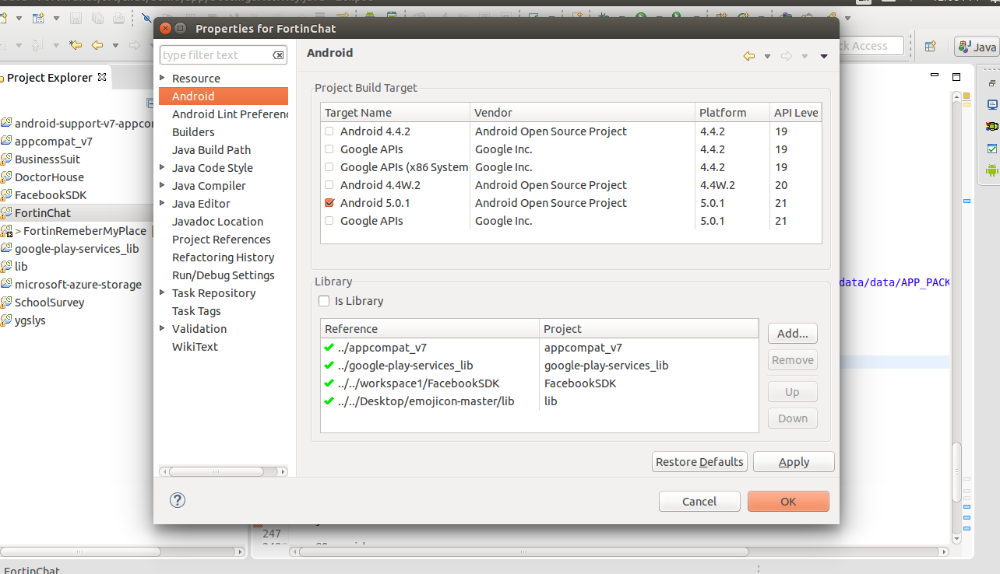

“ “Fortin Chat APP Using GCM for Android ”
” Documentation by “Mayuri” v1.1
Created: 16/03/2015
By: Mayuri
Email: mayuri2411@gmail.com
Thank you for purchasing my Application. If you have any questions that are beyond the scope of this help file, please feel free to email via my user page contact form here. Thanks so much!
Table of Contents
A) Introduction - top
Fortin Chat APP Using GCM Application is Native Android based Location based Chat Application which is designed to provide amazing user experience to connect to friends. Application is super easy to use and customize. There are features like Individual Chat, Group Chat using GCM. We are storing messages on Local storage. Register using Facebook and Google+.
Following are the features of the Chat application
- Supports Tablet and Mobile
- Individual and Group Chat
- Search People Around you.
- Login with Facebook and Google+
- Server with PHP and MYSQL
- Local Chat History
- Alert on new message. Auto refresh.
- Splash Screen
- Alert On/Off for Group Message
- Set Radius to search people around. Updated Version 2.0
- Smiley (Emoji)
- Send Image, Video, Sound
- Copy Text, Auto Hyperlink for website and phone.
- Get Block userlist and Unblock feature.
- Add Friend feature
- Update Group, Add new member to Group.
- Bug Fixes of Update 1.0
B) Java Files Structure - top
Following Image shows the basic folder structure of the application with Java files, when imported into Eclipse Integrated Development Environment.

The source code provided is an eclipse project and can be easily imported into eclipse. The folder Named 'FortinChat' contains all the required files for the Application which are required to import in eclipse.
Description of the Java files as follows, Please go through the same if you wish to go for risking and changing the application as per your need.
Splashscreen.java - Splashscreen for 3 Seconds. It will check user is loggedin or not. If user is not logged in it will take to Login Screen or Chat screen.
FBLogin.java - This Activity will appear only if user has not logged in or logout from Settings screen. It will ask to login using Facebook or Google. We will send data to server which we get from Facebook or Google.
DataManager.java - This is the very important Java class where you can set all your First Varisble is,
You will need to replace your server URL in place or "url" in DataManager class.
APIManager.java - This class to call the webservice to fetch data from server.
AddGroup.java This class will get user friends and you can create Group with name and Multiple Users.
AlarmReciever.java -This clas update locaion of User on Server on specified interval. This is background service.
AllUsersActivity.java This clas fetch Near By people or fetch User friends.
DbGroup.java - This class is for Storing group Details locally.
DbMessage.java - This class is for Storing message Details locally.
DbUsers.java - This class is for Storing user Details locally.
GcmBroadcastReceiver.java - This is default GCM class as WakefulBroadcastReceiver.
GcmMessageHandler.java - This class is usefu to Show notifiction and Store and filter message and alerts. We are also Storing dta on this file to local database.
GroupChatActivity.java - This Activity displys conversation for particular Group which is selected.
GroupInfo.java - This Java Class displays detais of Group members and Admin.
IndividualChat.java -This Activity displys conversation for particular User which is selected.
MyMessageActivity.java - This Java Class corresponds to the First screen display Individual Group chats list where you can select and start convesation. It will show also new Message alert as unread message. You can search nearby People from tap on "Search near by People".
SessionManager.java - Local shared Preference to store user details like userid, name, login or not.
SettingsActivity.java - This Java class will work as Setting activity where user can set Status, set interval for update locaion and set Radius to search people aroud. Also user can logout.
UserProfile.java - You can check user profile from this Activity.
C) GCM Setup - top
We are using GCM (Google Cloud Messaging) for conversation. You will need to follow below link to setup.
https://developer.android.com/google/gcm/gs.html
You will get PROJECT_NUMBER (sender key) once you setup. You will need to place your key on DataManager.java file.
C) Facebook SDK - top
We are using Facebook and Google+ for singin. You can regiter your app here:
https://developers.facebook.com/
You will get Facebook app id once you setup. You will need to place your key on /res/value/string.xml at fb_app_id
You can follow below link for more details on Facebook integraion.
https://developers.facebook.com/docs/facebook-login/android/v2.2
D) Emoji Lib - top
You will need to import "lib" folder to enable Emoji in applications.
Credit : https://github.com/ankushsachdeva/emojicon
Once again, thank you so much for purchasing this Application. As I said at the beginning, I'd be glad to help you if you have any questions relating to this Application. No guarantees, but I'll do my best to assist. If you have a more general question relating to the Application on CodeCanyon, you might consider visiting the forums and asking your question in the "Item Discussion" section.

Mayuri